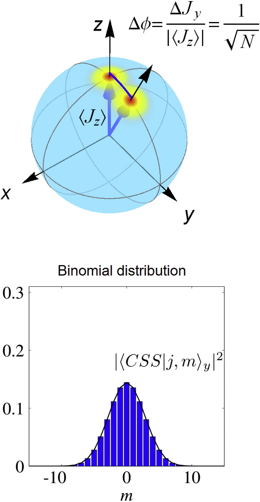
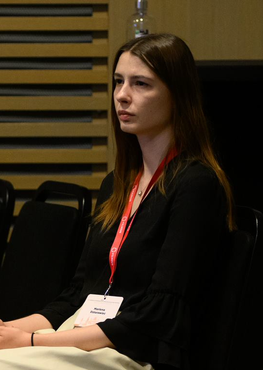

<!DOCTYPE html>
<html lang="en">
  <head>
    <meta charset="utf-8" />
    <meta name="viewport" content="width=device-width, initial-scale=1.0, maximum-scale=1.0, user-scalable=no" />

    <title>Practical Spin-Squeezing with Ultra-Cold Atoms in Optical Lattices</title>
    <link rel="shortcut icon" href="./favicon.ico" />
    <link rel="stylesheet" href="./dist/reset.css" />
    <link rel="stylesheet" href="./dist/reveal.css" />
    <link rel="stylesheet" href="./dist/theme/white.css" id="theme" />
    <link rel="stylesheet" href="./css/highlight/base16/zenburn.css" />


  </head>
  <body>
    <div class="reveal">
      <div class="slides"><section  data-markdown><script type="text/template">
<style>
.container{
  display: flex;
  justify-content: center;
  align-items: center;
}
.col {
  flex: 1;
}
</style>

### Practical Spin-Squeezing with Ultra-Cold Atoms in Optical Lattices

#### Doctoral Thesis 

Author: M.Sc. Tanausú Hernández Yanes

Supervisor: Dr. Hab. Emilia Witkowska

Institute of Physics of the Polish Academy of Sciences 

<!--
<a href="https://journals.aps.org/prl/abstract/10.1103/PhysRevLett.129.090403">PhysRevLett.129.090403</a>
-->


<aside class="notes"><p>Some quick sentence about what OAT, TACT and squeezing means as an intro.</p>
</aside></script></section><section  data-markdown><script type="text/template">
### Thesis Structure

- Collection of manuscripts 
- Introduction to squeezing, system under study and methods
- 4 papers about spin squeezing generation
- 1 pre-print about Bell correlations of spin squeezed states under occupation defects
- Conclusions of the overall work
</script></section><section  data-markdown><script type="text/template">
### Spin-squeezing



</script></section><section  data-markdown><script type="text/template">
### Dynamical generation of squeezed states


`$\left|\Psi(t)\right> = e^{-i\hat{H}t}\left|\Psi(0)\right>$`
</script></section><section  data-markdown><script type="text/template">### Example Hamiltonian: One Axis Twisting


<div class='container'>

<div class='col'>

`
$$
\begin{align}
\hat{H}_\mathrm{OAT} &= \chi \hat{S}_z^2 \\ 
&= \chi \sum_{i,j} \hat{S}^z_{i} \hat{S}^z_{j}
\end{align}
$$` 

`$\xi^2 \propto N^{-2/3}$`

</div>

<div class='col'>


</div>

</div>

<aside class="notes"><p>Cite Kitagawa-Ueda</p>
</aside></script></section><section  data-markdown><script type="text/template">### Example Hamiltonian: One Axis Twisting

<video controls class='r-stretch'>
	<source data-src='video/Q function OAT, N=100, M=100, tf=0.46, chi=1, proj=hammer, mf_style=quiver.mp4' type="video/mp4" />
</video>
</script></section><section  data-markdown><script type="text/template">
### Hubbard Model


`$    \hat{H} = \sum_{j=1}^{M'} \hat{H}^{\text{tunnel}}_j +\sum_{j=1}^M \hat{H}^{\text{int}}_j 
$`
</script></section><section  data-markdown><script type="text/template">
### Dipolar interactions in the Superfluid Phase

<div class='container'>
<div class='col'>

</div>
<div class='col'>

</div>
<div class='col'>

- Anisotropic TACT
- Heisenberg limited squeezing until $\eta \ll 1$.

</div>
</div>

<div style='font-size:.8em'>

[M. Dziurawiec et al, Phys. Rev. A 107, 013311 (2023)](https://journals.aps.org/pra/abstract/10.1103/PhysRevA.107.013311)

</div>

<aside class="notes"><p>OBC give similar results for $N\to\infty$. Time scale similar to TACT, squeezing scaling as TACT</p>
</aside></script></section><section  data-markdown><script type="text/template">### Atom-Light Coupling in the Mott-insulating phase

<!--

-->

<div class='container'>

<div class='col'>

- Heisenberg XXX model
- Periodic boundaries: OAT (one laser) and TACT (two lasers)
- Open boundaries: OAT and anisotropic TACT

</div>
</div>

<div style='font-size:.8em'>

[T. Hernández Yanes et al, Phys. Rev. Lett. 129, 090403 (2022)](https://doi.org/10.1103/PhysRevLett.129.090403)

[T. Hernández Yanes et al, Phys. Rev. B 108, 104301 (2023)](https://doi.org/10.1103/PhysRevB.108.104301)

</div>

<aside class="notes"><ul>
<li>Light acts as classical field (Raman coupling)</li>
<li>Complex model in OBC, can be adjusted with parameters</li>
</ul>
</aside></script></section><section  data-markdown><script type="text/template">
### Imperfections and Holes in the Mott insulating phase


<div class='container'>

<div style='width:40%'>

</div>

<div class='col'>

- t-J model
- OAT from contact interactions anisotropy
- OAT+Rot. from inhomo. magnetic field
- Different behaviour against holes, subsystems evolve independently

</div>
</div>

<div style='font-size:.8em'>

[T. Hernández Yanes et al, Phys. Rev. B 109, 214310 (2024)](https://doi.org/10.1103/physrevb.109.214310)

</div>
</script></section><section  data-markdown><script type="text/template">
### Entanglement of squeezed states under occupation defects

<div class='container'>

<div class='col'>

<!---->


</div>

<div class='col'>

- t-J model
- Two-site Bell correlator under occupation defects
- Toy model for lower bound of single-occupancy probability

</div>
</div>

<div style='font-size:.8em'>

[T. Hernández Yanes et al, Arxiv:2409.02873 (Pre-print, 2024)](https://arxiv.org/abs/2409.02873)

</div>
</script></section><section  data-markdown><script type="text/template">
### Conclusions 

- Relatively simple systems to generate spin-squeezed states in the 1D optical lattice with ultra-cold atoms
- Catalogue of setups with different limitations and advantages
- Perturbations may provide more entanglement than strong couplings 
- Future prospects: large spin, higher dimensions and more complex models
</script></section><section  data-markdown><script type="text/template">
### Thank you

<div class='container' style='font-size:.5em;'>

<div>
G. Žlabys

<br>

</div>

<div>
Y. Baamara

<br>

</div>


<div>
M. Dziurawiec

<br>

</div>

<div>
M. Plodzień

<br>

</div>

<div>
A. Niezgoda

<br>

</div>

<div>
M. Mackoit <!--Sinkevičienė-->

<br>

</div>

<div>
D. Burba

<br>

</div>

</div>

<div class='container' style='font-size:.5em;'>

<div>
M. Lewenstein

<br>

</div>

<div>
M. Gajda

<br>

</div>

<div>
A. Sinatra

<br>

</div>

<div>
G. Juzeliūnas

<br>

</div>


<div>
E. Witkowska

<br>

</div>

</div>


</script></section></div>
    </div>

    <script src="./dist/reveal.js"></script>

    <script src="./plugin/markdown/markdown.js"></script>
    <script src="./plugin/highlight/highlight.js"></script>
    <script src="./plugin/zoom/zoom.js"></script>
    <script src="./plugin/notes/notes.js"></script>
    <script src="./plugin/math/math.js"></script>
    <script>
      function extend() {
        var target = {};
        for (var i = 0; i < arguments.length; i++) {
          var source = arguments[i];
          for (var key in source) {
            if (source.hasOwnProperty(key)) {
              target[key] = source[key];
            }
          }
        }
        return target;
      }

      // default options to init reveal.js
      var defaultOptions = {
        controls: true,
        progress: true,
        history: true,
        center: true,
        transition: 'default', // none/fade/slide/convex/concave/zoom
        slideNumber: true,
        plugins: [
          RevealMarkdown,
          RevealHighlight,
          RevealZoom,
          RevealNotes,
          RevealMath
        ]
      };

      // options from URL query string
      var queryOptions = Reveal().getQueryHash() || {};

      var options = extend(defaultOptions, {"transition":"fade","navigationMode":"default","<!--center":"false-->","<!--showNotes":"true-->"}, queryOptions);
    </script>


    <script>
      Reveal.initialize(options);
    </script>
  </body>
</html>
